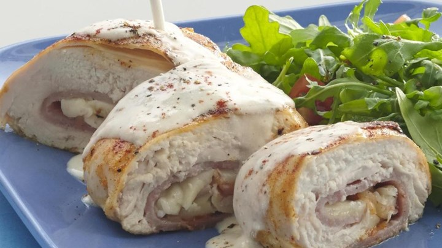

Back
Chicken Cordon Bleu
Ingredients
- One raw boneless skinless chicken breast cutlet
- 1 wedge The Laughing Cow Light Original Swiss Cheese (room temperature) or swiss cheese slices (or whatever cheese you want)
- ~3 ham slices
- Salt + Pepper to taste.

Instructions
- Preheat oven to 350 degrees.
- Put chicken in a large sealable plastic bag, squeeze out as much air as you can, and seal. Using a meat tenderizer or a can, carefully pound chicken through the bag until it is about 1/4-inch thick. Remove chicken from the bag, and season to taste with salt and pepper on both sides.
- Lay the chicken flat and spread or lay the cheese wedge over it. Evenly layer the ham slices on top of the cheese. Starting with one of the longer sides (or any side, if it's square), tightly roll up the chicken breast cutlet, and secure with toothpicks.
- Place chicken roll in a baking dish lined with foil and/or sprayed with nonstick spray, and then cover the baking dish with foil. Put more cheese on top if you want.
- Bake in the oven for 20 minutes. Carefully remove the foil covering the dish. Continue to bake (uncovered) for an additional 15 minutes, or until chicken is cooked through. Enjoy!
Source